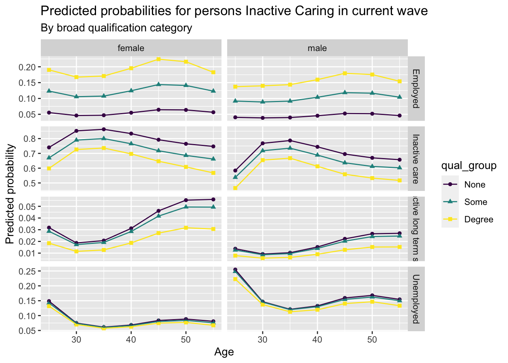

the feend_dv variable (in xwavedat.dta) looks inconsistent compared with hiqual_dv
We need to look further at this variable and how it’s derived.
Aim
This notebook will aim to estimate PAFs attributable to low/no education.
Variables to consider:
feend - age left further education
hiqual_dv - highest qualification (will require some recoding)
Discussion with Martin
We are unsure where the ‘other qualification’ group fits within within a simple and meaningful hierarchy going from none, to gcse, to A-level to degree
We could look at making it equivalent both to gcse, or to A-level, and modelling under both assumptions?
# weights: 238 (198 variable)
initial value 448049.703642
iter 10 value 178421.309710
iter 20 value 148331.001206
iter 30 value 134058.694236
iter 40 value 121762.926198
iter 50 value 113294.317291
iter 60 value 105900.282500
iter 70 value 101724.243604
iter 80 value 97038.430735
iter 90 value 94476.811055
iter 100 value 93843.295952
final value 93843.295952
stopped after 100 iterations
# weights: 252 (210 variable)
initial value 448049.703642
iter 10 value 201836.011318
iter 20 value 176324.237601
iter 30 value 151805.208749
iter 40 value 137060.460419
iter 50 value 121425.009912
iter 60 value 111968.668436
iter 70 value 103691.474057
iter 80 value 99393.187434
iter 90 value 95815.113158
iter 100 value 93548.359467
final value 93548.359467
stopped after 100 iterations
First visualisation, for males and females who start off employed, what’s the estimated effect of different levels of qualification on remaining employed?
Code
predictions_predictors |>filter(this_status =="Employed") |>filter(predicted_next_status =="Employed") |>ggplot(aes(x = age, y = predicted_probability, shape = qual_group, colour = qual_group)) +facet_wrap(~sex) +geom_point() +geom_line() +labs(x ="Age", y ="Predicted probability",title ="Predicted probability of those Employed remaining Employed",subtitle ="By broad qualification category" )
Warning: Using shapes for an ordinal variable is not advised
What about from unemployment to employment, and from unemployment to either long-term sick or carer?
Code
predictions_predictors |>filter(this_status =="Unemployed") |>filter(predicted_next_status %in%c("Employed", "Unemployed", "Inactive care", "Inactive long term sick")) |>ggplot(aes(x = age, y = predicted_probability, shape = qual_group, colour = qual_group)) +facet_grid(predicted_next_status~sex, scales ="free_y") +geom_point() +geom_line() +labs(x ="Age", y ="Predicted probability",title ="Predicted probabilities for persons Unemployed in current wave",subtitle ="By broad qualification category" )
Warning: Using shapes for an ordinal variable is not advised
Another scenario:
Let’s consider the inactive care to employment, unemployment, long-term sick
Code
predictions_predictors |>filter(this_status =="Inactive care") |>filter(predicted_next_status %in%c("Employed", "Unemployed", "Inactive care", "Inactive long term sick")) |>ggplot(aes(x = age, y = predicted_probability, shape = qual_group, colour = qual_group)) +facet_grid(predicted_next_status~sex, scales ="free_y") +geom_point() +geom_line() +labs(x ="Age", y ="Predicted probability",title ="Predicted probabilities for persons Inactive Caring in current wave",subtitle ="By broad qualification category" )
Warning: Using shapes for an ordinal variable is not advised

Estimated effects of changing no qualifications to some qualifications
Let’s take an illustrative wave, such as j, and modify anyone who has no qualification to the some qualifications category
# A tibble: 28 × 4
output scenario state value
<chr> <chr> <chr> <dbl>
1 absolute baseline Employed 13046.
2 absolute counterfactual Employed 13085.
3 absolute baseline Inactive care 947.
4 absolute counterfactual Inactive care 929.
5 absolute baseline Inactive long term sick 738.
6 absolute counterfactual Inactive long term sick 723.
7 absolute baseline Inactive other 92.9
8 absolute counterfactual Inactive other 91.4
9 absolute baseline Inactive retired 570.
10 absolute counterfactual Inactive retired 579.
# ℹ 18 more rows
Code
distribution_results |>make_tabular_summary()
# A tibble: 7 × 5
state baseline counterfactual abs_label rel_label
<ord> <dbl> <dbl> <glue> <glue>
1 Employed 13046. 13085. 39 more 0.3% up
2 Unemployed 631. 616. 14 less 2.3% down
3 Inactive long term sick 738. 723. 15 less 2.1% down
4 Inactive student 97.7 98.8 1 more 1.1% up
5 Inactive care 947. 929. 17 less 1.8% down
6 Inactive retired 570. 579. 9 more 1.5% up
7 Inactive other 92.9 91.4 1 less 1.6% down
And with a formatted table
Code
distribution_results |>make_tabular_summary(outputType ='kable', title ="Estimated effect of ensuring everyone has some qualifications",subtitle ="Data used: Wave J of UKHLS" )
Estimated effect of ensuring everyone has some qualifications
calculate_baseline_counterfactual_distribution(m = mod_highestqual,d_base = scenario_baseline, d_counter = scenario_counterfactual_degree) |>make_tabular_summary(outputType ='kable', title ="Estimated effects if everyone had activity propensities of those with degrees",subtitle ="Data used: Wave J of UKHLS" )
Estimated effects if everyone had activity propensities of those with degrees
Scenarios
Comparisons
Baseline
Counterfactual
Absolute
Relative
Active
Employed
13046
13291
245 more
1.9% up
Unemployed
631
538
92 less
14.6% down
Inactive
Long-term Sick
738
580
158 less
21.4% down
Student
98
111
14 more
14% up
Full-time Carer
947
834
112 less
11.9% down
Retired
570
659
89 more
15.6% up
Other
93
107
14 more
15.5% up
Data used: Wave J of UKHLS
This appears to have a more substantive effect, as expected.
Let’s now look at the effect of moving everyone up one level (except degree, as they’re already at the top level)
calculate_baseline_counterfactual_distribution(m = mod_highestqual,d_base = scenario_baseline, d_counter = scenario_counterfactual_up_one) |>make_tabular_summary(outputType ='kable', title ="Estimated effect if everyone's qualification class moved up one level (up to degree)",subtitle ="Data used: Wave J of UKHLS" )
Estimated effect if everyone's qualification class moved up one level (up to degree)